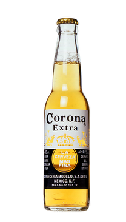

| Beer Image |
Name |
Description |
Price |
|  |
Corona Extra 330ml |
Lighter than traditional beers, with a crisp and refreshing taste.Light, dry beer has pleasant malt and hop notes with a round dry finish. |
2.00 lv. |
 |
Stella Artois 330ml |
Stella Artois is a Belgian pilsner lager with the distinctive taste of saaz hops and golden in colour.A balanced, full-flavoured premium lager with a pronounced hoppy bitterness and a crisp, clean and refreshing |
3.00 lv. |
 |
Carlsberg Pilsner 330ml |
Brewed since 1904. A pilsner type inspired by the Czech traditions. The crown jewel of Danish brewing needs little introduction. This European lager was groundbreaking in 1847 and is still the benchmark by which others are judged |
2.50 lv. |
 |
Heineken 330ml |
Only three natural ingredients; water, malted barley and hops.Taste: Underlying tropical fruit and apple flavours combine with a clean palate and a refreshing finish with some hop notes. |
2.20 lv. |